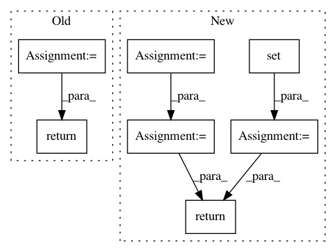

20ffaf6bcf25ff6ed9de36378a55cd8a424cc9c7,dowhy/causal_graph.py,CausalGraph,get_descendants,#CausalGraph#Any#,263
Before Change
return set(nx.ancestors(graph, node_name))
def get_descendants(self, node_name):
return set(nx.descendants(self._graph, node_name))
def all_observed(self, node_names):
for node_name in node_names:
if self._graph.nodes[node_name]["observed"] != "yes":
After Change
return set(nx.ancestors(graph, node_name))
def get_descendants(self, nodes):
descendants = set()
for node_name in nodes:
descendants = descendants.union(set(nx.descendants(self._graph, node_name)))
return descendants
def all_observed(self, node_names):
for node_name in node_names:
if self._graph.nodes[node_name]["observed"] != "yes":
In pattern: SUPERPATTERN
Frequency: 4
Non-data size: 7
Instances
Project Name: Microsoft/dowhy
Commit Name: 20ffaf6bcf25ff6ed9de36378a55cd8a424cc9c7
Time: 2020-08-27
Author: amit_sharma@live.com
File Name: dowhy/causal_graph.py
Class Name: CausalGraph
Method Name: get_descendants
Project Name: biolab/orange3
Commit Name: 8d4d199c35f5163ed21ae705a16ce3c8548d60c6
Time: 2012-11-28
Author: janez.demsar@fri.uni-lj.si
File Name: Orange/data/io.py
Class Name: BasketReader
Method Name: prescan_file
Project Name: pantsbuild/pants
Commit Name: ac0b7e4b3d8267c682b2e821f8db592ca94103e3
Time: 2018-03-18
Author: stuhood@twitter.com
File Name: src/python/pants/engine/build_files.py
Class Name:
Method Name: spec_to_globs
Project Name: gyoisamurai/GyoiThon
Commit Name: 8c187989b286c5b50d61c0c49ccb36f98ec25c92
Time: 2019-04-25
Author: gyoiler3@gmail.com
File Name: modules/Gyoi_Inventory.py
Class Name: Inventory
Method Name: link_explorer